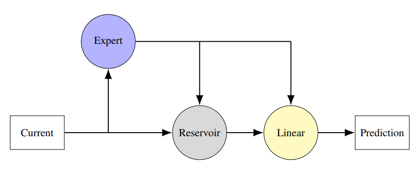

Conor Houghton
Old news
(2025-01-22) BRAID: Brains, AI and Data!
Today we ran our BRAID workshop today at the Watershed, with support from the Jean Golding Institute and the Elizabeth Blackwell Institute and more specifically by the Turing Liaison team at the JGI and the Bristol Neuroscience hub at the EBI.
It went really well, the idea was to celebrate AI and machine learning as an approach to neuroscience data and to celebrate the conversation between neuroscience and AI, so neuroscience as an application of AI and neuroscience and AI as subject which have a long history of useful exchange.
There were great talks and lots of excitement and conversation. The highlight was the flash talks by PhD students and PostDocs, three minute talks are really hard to give but when done well as they were here, they are fun and informative. I also really enjoyed a super entertaining talk by Edwin Dalmaijer; it turns out that pigeons, famously good at navigating, don't do it exactly the way you'd expect, they rely on recognizing landmarks as well as their sense of direction, sometimes leading to circuitous routes, however, when flying with other birds, their flocking behaviour leads them to discover new, more direct routes. Edwin used a simple agent model to show how this might work. Laurence Aitchison gave a fantastic talk, full of insight, which introduction his neuroscience-y approach to understanding how transformers work, often the black-box nature of computation in neural networks is presented as a big problem, but really it is an amazing opportunity, we don't know how these machines compute but they are easier to study than the brain and so when with clever methods we work out how they do compute we will have learned something profound about the structure of computation and information.
Thanks to my co-organizers: Cathy Brown, Isy Halton, Paul Anastasiades, Paul Chadderton and Seán Froudist-Walsh.
The programme is here: 2025_BRAID.pdf
(2024-12-23) Striking image; PLoS, likes lots of journals has started asking for a `striking image' to accompany a published paper. The iterated learning model paper:
didn't have any graph that would be suitable, so I commissioned one from the cartoonist Haidar Nahwan

(2024-11-27) More paper news; it's been a good week:
GlyT2-positive interneurons regulate timing and variability of information transfer in a cerebellar-behavioural loop.
Ensor Palacios, Conor J Houghton and Paul Chadderton
biorxiv.org
has been accepted by the Journal of Neuroscience.
Our paper reports on complicated experiments by Ensor in Paul's lab to understand the behavioural role of the large inhibitory cells in the cerebellar cortex, more specifically, the way these cells control the representation of whisker movement in the cerebellum. Using fancy methods the activity of the inhibitory cells was reduced and the neural activity in cerebellum was recorded.
The results were subtle. There is a lesson here; the large inhibitory cells, the Golgi and Lugario cells, are clearly metabolically costly, but their role is not as obvious as that would lead you to expect. The brain clearly relies on what we imagine to be very subtle modulation of activity and is willing to pay for it in energy!
In any case, using computational methods as fancy as the experimental methods, it was possible to tease this apart and show that down-regulation of Golgi and Lugaro cells has very little influence on sensorimotor representations in the cerebellum but instead modulates the timing of cortical population activity. In short, the inhibitory cells control when information is represented, not what information is represented. Our results indicate that inhibitory interneurons in the granule cell layer are necessary to appropriately pace changes in cerebellar activity to match ongoing behaviour.
(2024-11-29) Postdoc position
Postdoc position in Bristol in a animal behaviour project lead by the great Emma Robinson, I'm a co-I and we're looking for a computational person keen to do experiments or an experimental person keen to learn some modelling, deadline 2024-12-17.
(2024-11-20) Paper news:
We have just put a revised version of
An iterated learning model of language change that mixes
supervised and unsupervised learning
Jack Bunyan, Seth Bullock, Conor Houghton
up on arXiv:
The good news is that the paper is now in press with PLoS Complex Systems, which I am super excited about. This is the paper I think of as "the big ILM paper" and it is great we got it into a good journal, I really keen for people to read it and the venue helps with that!
The ILM, or iterated learning model, was used by Simon Kirby and his co-workers to model the way languages evolve; the "languages" in the model are comically simple, maps from vectors of zeros and ones representing "meanings" to vectors of zeros and ones representing "signals". Simple as they are, we can nonetheless ask how expressive and composition one of these languages is.
In the ILM a tutor teaches a pupil a language using a limited random set of examples; the pupil then become a tutor itself and teaches a new pupil. Since it only learned a subset of the language it is forced to generalize to produce its own examples. The interesting thing is that the language evolves expressivity and compositionality through the resulting cycles of generalization and subselection
The original ILM included an unrealistic step, basically to make a map that goes both ways, mapping meanings to signals and signals to meaning, the pupil needed to do a sort of inversion. It is as if a child stayed silent until 12, then imagined everything they could ever possibly say and then did some complicated matrix operation in their heads before starting to speak. We found a way of removing this step, but to do that, we need the pupil to cogitate on meanings, to sharpen their understanding of the language they are learning by mapping meanings into signals, then mapping the signals back to meanings to check the output meaning was the same as the input meaning.
My new belief is that this is the crucial step for the appearance of language. The hypothesis is that at some point in our evolutionary past we internalized our utterance and from that unfolded language.
Anyway I have a short talk about it here:
(2024-11-12) New paper:
Modeling nonlinear oscillator networks using physics-informed hybrid reservoir computing.Andrew Shannon, Conor Houghton, David Barton, Martin Homer
(Under review, 2024)
arXiv: 2411.05867
Modelling dynamical systems using differential equations is often, maybe even typically, difficult: we don't know all the terms in the equations, we don't all the parameters. The modern alternative is to give the problem to a neural network, maybe an RNN; however, this can be a disaster, the RNN will learn the training data perfectly but find some cunning way to draw bizarre conclusions about what the system would do in just slightly different circumstances to the ones in the data. The neural network also commits the twin crimes of ignore our existing intuition for the behaviour of the system and supplies no new qualitative insight into what's going on.

Here we consider a hybrid; a neural network coupled to an expert model: the system of differential equations we believe captures some important aspects of the behaviour. If we used a `proper' RNN with end-to-end training it would just take over and not leave anything for the differential equations. Instead we use a reservoir computer, a recurrent neural network with fixed connections: all that is learned in a final, linear, read-out layer. This follows the ideas described in:
Pathak, J. et al. Hybrid forecasting of chaotic processes: Using machine learning in conjunction with a knowledge-based model. Chaos 28, 041101 (2018)
Karniadakis, G. E. et al. Physics-informed machine learning. Nature Reviews Physics 3, 422-440 (2021).
We test this physics-informed hybrid reservoir computing approach on an oscillating system: these have lots of applications including the application we ultimately have in mind, EEG signals recorded from the brain. We use a system of Kuramoto oscillators, so the idea is that the hybrid system includes a module, the expert model, which includes the differential equations for the Kuramoto oscillators. However, the ground truth, the thing we are trying to model, has an extra non-linear coupling: this represents extra physics that the modeller doesn't know about. This is a stern test, the extra term changes the behaviour making the expert model useless on its own. The question is whether the reservoir can compensate?
The answer is a bit complicated: the hybrid is mostly better than the alternative of using just the reservoir or just the expert model and the hybrid is much less sensitive to the choice of metaparameters, but all three approaches struggle a bit with the task.
Our conclusion is that the hybrid systems are likely to be useful for control systems, but our interest is using the hybrid systems to better fit the expert system: the idea is that the expert system contains important stuff, the parameters, if fit, will tell us about the system we're modelling. For example, if we are modelling EEG, the couplings will tell us something important about neural circuits. However, if extra unknown nonlinear terms mean we can't fit the model, we can't use the data to understand the system. Using a hybrid might allow us to fit the data and find the parameters, couplings and the like, that answer the real world questions that we might have. That's what we're going to look at next.
(2024-10-22) George wins funding for:
Collecting and analysing multilingual EEG data
George Sains is a doctoral teaching associate in my lab; this means he is partly a PhD student and partly involved in teaching, something like an American style PhD student with TA duties. He recently apply to the Jean Golding Institute
for seedcorn funding to run an EEG study, unusually for a student with a computational background George has from the start wanted to run an experiment. We have just heard his application was successful.
George has been working on the analysis of EEG data building on early work by Davide Turco:
Bayesian modeling of language-evoked event-related potentials
Davide Turco and Conor Houghton
Conference on Cognitive Computational Neuroscience (CCN 2022)
arxiv.org/abs/2207.03392
We have had some interesting results that tell a fascinating story about grammar and the brain. The next stage demands multi-lingual data: recording from speakers of different languages. To this end George will record EEG data from English and Chinese speakers. This will in collaboration with the Bristol Digital Futures Institute:
www.bristol.ac.uk/bristol-digital-futures-institute/
The award will pay experimental costs and participant fees and also includes some help from the Jean Golding Institute data scientists to improve our data workflow, which is very cool. We are excited to see what George finds!
(2024-09-24) A paper about evolution!
Cooperation as well as learning: A commentary on 'How learning can guide evolution' by Hinton and Nowlan
Conor Houghton
(To appear Complex Systems, 2024).
arXiv: 2409.15609
According to the Baldwin Effect learning can guide evolution: being able to learn a trait can help a species evolve that same trait. This at first feels like Lemarkian nonsense, but it isn't.
Lets consider a very artificial example; imagine it is useful for a hen to be able recognize a snake and then stand up tall and dinosaur-like to scare it off. Imagine further, and implausibly, that each of these two traits can be produced by a single mutation. Every so often a hen is hatched that can recognize a snake. This trait does it no good since it doesn't know how to scare off that same snake. Similarly, imagine on other occasions a hen is hatched that can scare off snakes; again this trait is useless, it is no good knowing how to scare of a snake if you don't know how to spot one. Sadly it is much much rarer that a hen is hatched that has both traits at once and so the useless individual traits disappear from the population and evolutionary change does not produce snake-safe hens..
Now imagine that a hen can also learn, though experience, to scare off snakes, learning the required tall stance after a few close calls. In this case, inheriting the mutation that allows a hen to recognize a snake is useful, when it recognizes the snake and with a few frightening encounters and a little luck, it can learn to scare snakes off. Thus the potential to learn how to scare snakes makes the recognizing-snakes mutation useful and so this mutation will provide fitness and in the usual Darwinian way spread through the population. Furthermore, once the hens can recognize snakes, the mutation that makes them instinctively stand tall to scare snakes becomes useful too, it saves them the risky encounters required to learn the trait by experince. In this way, the fact they can learn the traits makes the species more likely to evolve this. This is the Baldwin Effect.
In 1987 Hinton and Nowlan wrote a very elegant paper describing the Baldwin Effect in a clear way and illustrating it with a nice mathematical simulation.
How learning can guide evolution
Geoffrey E. Hinton and Steven J. Nowlan
Complex Systems (1987) 3:495-502.
This paper was influential, for example, it formed part of the argument in Pinker and Bloom's powerful argument that language evolved through normal Darwinian mechanisms:
Natural language and natural selection
Steven Pinker and Paul Bloom
Behavioral and Brain Sciences (1990):707-727.
In my paper I point out that there is a similar effect with cooperation. Perhaps in a flock of hens one hen gets the mutation that allows it to recognize a snake and when it sees one it squawks in alarm, another hen has the mutation that makes standing tall when under threat instinctive and so it scares away the snake, for the benefit of all. Both traits are benefitial and the usual Darwinian, survivalist, principles mean that they will become established. The two mutations are much more likely to occur in the same time in flock than in one individual animal. My paper uses the same sort of simulations described by Hinton and Nowlan to illustrate this effect. Thus, in addition to the obvious benefits of social behaviour in animals, cooperation broadens the evolutionary path to complex behaviours.
(2024-09-09) New preprint:
Residual stream analysis with multi-layer SAEs
Tim Lawson, Lucy Farnik, Conor Houghton, Laurence Aitchison
I am excited and lucky to be involved in this work which is almost totally due to my collaborators.
Like everyone else we are interested in how transformers work and, in particular, in how they represent and manipulate the features of language. It turns out that sparse autoencoders are a useful way to find out what these features are. So far this approach has used a different autoencoder on each layer of a transformer. However, the residual stream is often thought of a sort of scratch pad, a representation of the input which gets acted on and updated across successive processing steps. If this is true, then it should be possible to train a single autoencoder and see the same feature crop up, sometimes in one layer, sometimes in another. This is what we did and sort of what we saw, while there seem to be some features that are layer specific, some occur in different layers. Our preprint has graphs to show this and, more importantly, now we know the approach works, we can look to understanding what language looks like to a transformer!
(2024-09-06) Poster from CCS24
doi.org/10.5281/zenodo.13709968
about my attempt to find the simplest possible model of language evolution, one that includes only our wish to communicate, our propensity towards playful innovation in language and our inclination to communicate only with those whose language resembles our own. The result is a sort of Ising model.
I amn't sure how useful this model is, it contains nothing about the mechanics of language and so perhaps it is too abstract to tell us anything useful. However one thing I did find while working on the simulations and wondering how to compare it to real data is that the languages of the world, by population, satisfy a LogNormal.
(2024-09-05) I was at the super COMPILA2024 workshop at CCS2024 this week; I really enjoyed the workshop, it was my first time meeting other people keen to see what modelling can tell us about language change. My talk was about new Iterated Learning Model I'm proposing with Seth Bullock and Jack Bunyan. I made a recording of the talk:
youtube with slides at doi.org/10.5281/zenodo.13692349
In the talk, more than the paper, I'm trying to sell the idea that the model suggests something exciting: that the key to language evolution and to the use of language specifically by humans, is the use humans make of our utterances as a component of our thought. The idea is- simple animals: stimulus → action
- more complex animals: stimulus → thought → action
- social animals: stimulus → thought → action or utterance
- our ancestors: stimulus → (thought ↔ internal utterances) → action or utterance
- humans: stimulus → (thought ↔ internal language) → action or language
The paper is here: arxiv: 2405.20818
(2024-08-20) My student Davide Turco has made a great poster for our Conference on Cognitive Computational Neuroscience paper "Investigating the timescales of language processing with EEG and language models": zenodo.org
The paper is
Investigating the timescales of language processing with EEG and language models.
Davide Turco and Conor Houghton
Conference on Cognitive Computational Neuroscience (CCN 2024)
arxiv: 2406.19884
(2024-08-15): A new paper under review describing a hierarchical Bayesian workflow for analysing cell count data:
Hierarchical Bayesian modeling of multi-region brain cell count data.
Sydney Dimmock, Benjamin M.S. Exley, Gerald Moore, Lucy Menage, Alessio Delogu, Simon R Schultz, E Clea Warburton, Conor J Houghton and Cian O'Donnell
bioRxiv, bioRxiv doi: 10.1101/2024.07.20.603979
These days experimentalists can mark neurons, slice up the brain and then count the marked cells. To use the two examples in our paper, this might mean marking all the cells that are active during some behaviour or all the cells with a particular developmental lineage. For each animal the number of marked cells is counted for lots of different brain region, in some experiments as many as a hundred.
These data are super cool, they give information across the whole brain. They are, however, very time-consuming and expensive to collect and often there are only ten animals for each experimental condition. Now, the whole cool thing about the data is the high dimension, there are cell counts for each brain region, but this combination of a high dimension and a small sample means the data are under-sampled.
Clearly Bayesian analysis can help with analysis, but for a Bayesian analysis you need to decide on a model and a set of priors. New samplers means Bayesian approaches can be used for data like this, but setting up the analysis can be intimating. Bayesian methods predate t-tests and the like, but in the last century they were not as well used as the classic mixture of hypothesis tests. As such there is not a lot of lore and tradition about what choices to make when it comes to doing a Bayesian analysis.
In our paper we try to help by suggesting a 'standard' Bayesian workflow for cell count data. We test our workflow on two datasets and in both cases it works really well. It produces clearer results than a more classical approach. Bayesian models are less familiar but they are actually very transparent and clear.